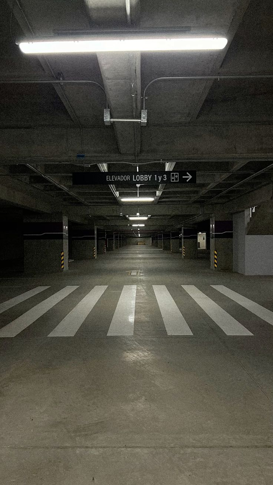
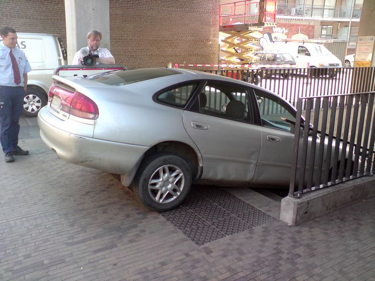

Parqueadero JP
Nuestro parqueadero cuenta con amplios espacios para
vehículos, motocicletas y bicicletas, brindando
seguridad y comodidad a todos los residentes del
condominio.
Tipos de Parqueaderos
- Parqueadero privado
- Parqueadero para visitantes
- Zona para motocicletas
- Espacios para bicicletas
- Parqueaderos cubiertos
- Cámaras de vigilancia 24/7
Seguridad y Control
JP Condominio ofrece vigilancia permanente,
control de acceso y monitoreo por cámaras para
garantizar la protección de los vehículos y la
tranquilidad de nuestros residentes.